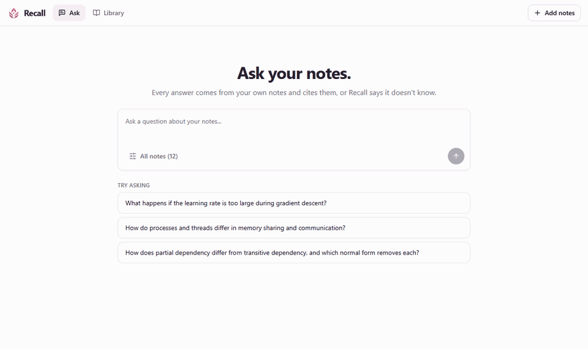

0,802 → 0,693
Reranker heuristique : rejetéHeuristic reranker: rejected
MRR en baisse, pire sur 6 questions sur 16, meilleur sur aucune.MRR dropped: worse on 6 of 16 questions, better on none.
Élève-ingénieure en génie logiciel · IA générative & agents Software engineering student · Generative AI & agents
Un modèle qui impressionne en démo, c'est une chose. Un outil auquel une équipe fait confiance tous les jours, c'en est une autre. Voici comment j'ai appris à construire le second, projet après projet. A model that impresses in a demo is one thing. A tool a team trusts every day is another. Here is how I learned to build the second kind, one project at a time.
Je recherche un stage de fin d'études de 6 mois en IA générative / IA agentique, à partir de février 2027. Looking for a 6-month final-year internship in generative / agentic AI, starting February 2027.
Prologue · 2022 – 2025Prologue · 2022 – 2025
Avant l'IA, il y a eu le logiciel. Ingénierie à MedTech (Tunis), puis un échange au CESI Strasbourg en IA & Data. Trois stages m'ont appris ce que « en production » veut dire. Before AI, there was software. Engineering school at MedTech (Tunis), then an exchange at CESI Strasbourg in AI & Data. Three internships taught me what "in production" means.
Leçon : écouter avant de coder.Lesson: listen before you code.
J'ai interviewé les Technical Account Managers pour comprendre leurs workflows, priorisé les tâches à automatiser, puis présenté un PoC aux équipes métier.I interviewed Technical Account Managers to map their workflows, prioritised what to automate, and presented a proof of concept to the business teams.
Leçon : le temps réel ne pardonne rien.Lesson: real time forgives nothing.
Une messagerie interne entre départements : MERN, Socket.IO, architecture REST/WebSocket, authentification JWT, présence et historique.An internal messaging platform across departments: MERN, Socket.IO, REST/WebSocket architecture, JWT auth, presence and history.
Leçon : un modèle n'existe que s'il est déployé et surveillé.Lesson: a model only exists once it is deployed and monitored.
Planification des congés pour anticiper les sous-capacités : pipeline Jenkins en 12 étapes (SonarQube, Docker, Terraform sur AWS EC2), supervision Prometheus & Grafana, et un classifieur servi par FastAPI avec explications SHAP (ROC-AUC 0,73).Leave planning to anticipate under-capacity: a 12-stage Jenkins pipeline (SonarQube, Docker, Terraform on AWS EC2), Prometheus & Grafana monitoring, and a FastAPI-served classifier with SHAP explanations (ROC-AUC 0.73).
github.com/nour0205/leave-management-devops →Chapitre 1 · 2025 – 2026Chapter 1 · 2025 – 2026
Mermaid.js transforme du texte en diagrammes ; des millions de développeurs l'utilisent dans GitHub, Notion ou GitLab. Y contribuer, c'est lire une grosse base de code, respecter ses conventions et convaincre des mainteneurs. Plus de 11 PR fusionnées, et une invitation à rejoindre l'organisation mermaid-js. Mermaid.js turns text into diagrams; millions of developers use it inside GitHub, Notion and GitLab. Contributing means reading a large codebase, following its conventions and convincing maintainers. 11+ merged PRs, and an invitation to join the mermaid-js organisation.
Essayez ma fonctionnalitéTry my feature
inheritDirAvant, un sous-graphe ignorait la direction du graphe parent. Mon option lui permet d'en hériter. Ce diagramme est rendu en direct par Mermaid.Before, a subgraph ignored its parent graph's direction. My option lets it inherit it. This diagram is rendered live by Mermaid.
Clin d'œil : tous les schémas de ce site sont dessinés avec Mermaid.Fun fact: every diagram on this site is drawn with Mermaid.
Chapitre 2 · 2026Chapter 2 · 2026
EchoBloom détecte l'émotion dans la voix et anime le visage d'un MetaHuman dans Unreal Engine 5. Le vrai défi n'était pas le modèle : c'était de transformer des prédictions bruitées en une timeline stable, assez fiable pour piloter une animation. Prix du meilleur projet étudiant. EchoBloom detects emotion in speech and drives a MetaHuman's face in Unreal Engine 5. The real challenge wasn't the model: it was turning noisy predictions into a stable timeline, reliable enough to drive an animation. Best student project award.
Comment ça marcheHow it works
Illustration de la timeline produite par l'API (segments horodatés avec score de confiance), pas un enregistrement réel.Illustration of the timeline the API produces (timestamped segments with confidence scores), not a real recording.
Chapitre 3 · Devoteam · été 2026Chapter 3 · Devoteam · summer 2026
Chez Devoteam, des consultants faisaient évoluer à la main des processus d'approvisionnement pharmaceutique modélisés en BPMN. J'ai conçu un agent qui le fait à partir du langage naturel. Mon choix le plus important : le LLM n'écrit jamais le XML. Il interprète la demande ; un moteur déterministe vérifie, planifie et exécute, et rien ne change sans approbation humaine. At Devoteam, consultants were editing pharmaceutical procurement processes, modelled in BPMN, by hand. I designed an agent that does it from natural language. My most important decision: the LLM never writes the XML. It interprets the request; a deterministic engine checks, plans and executes, and nothing changes without human approval.
Simulez l'agentStep through the agent
« Ajoutez une tâche utilisateur nommée 'Valider la demande' avant l'activité 'Rédiger le cahier des charges'. »
{"op": "insert_task_before", "anchor": "A3", "name": "Valider la demande"}L'agent sait aussi recommander des améliorations : une analyse structurelle déterministe extrait des preuves, le LLM raisonne dessus, et toute recommandation citant un élément inexistant est rejetée. Un second pipeline génère les procédures opérationnelles et spécifications au format Word.The agent can also recommend improvements: a deterministic structural analysis extracts evidence, the LLM reasons over it, and any recommendation citing a nonexistent element is rejected. A second pipeline generates operating procedures and specifications as Word documents.
Chapitre 4 · 2026Chapter 4 · 2026
Quand on révise avec un chatbot, il répond avec assurance, même quand il invente. Recall répond uniquement à partir des cours de l'étudiant, cite un passage pour chaque affirmation, et dit exactement « I don't know » sinon. Mais ce dont je suis le plus fière, c'est l'évaluation : chaque choix a été testé avant d'arriver en production. When you revise with a chatbot, it answers confidently, even when it makes things up. Recall answers only from the student's own notes, cites a passage for every claim, and says exactly "I don't know" otherwise. What I'm proudest of is the evaluation: every design choice was tested before it reached production.

Une affirmation citée n'est pas une preuveA citation is not evidence
Q. Que se passe-t-il si le taux d'apprentissage est trop grand en descente de gradient ?What happens if the learning rate is too large during gradient descent?
"A learning rate that is too large results in overshooting the optimal parameter values, leading to instability in the training process [S1]."
Surligné : absent des notes, pourtant cité.Highlighted: not in the notes, yet cited."A learning rate that is too large may cause divergence [S1]."
Exactement ce que disent les notes, « may » compris.Exactly what the notes say, including "may".Comparez les promptsCompare the prompts
4 prompts, mêmes 19 questions, mêmes passages : seul le prompt change. Chaque réponse relue à la main, affirmation par affirmation.4 prompts, same 19 questions, same passages: only the prompt changes. Every answer reviewed by hand, claim by claim.
0,802 → 0,693
MRR en baisse, pire sur 6 questions sur 16, meilleur sur aucune.MRR dropped: worse on 6 of 16 questions, better on none.
2,1 s → 1,2 s
Le prompt final était identique octet pour octet avec ou sans lui, sur les 19 questions.The final prompt was byte-identical with or without it, on all 19 questions.
+0,65 s
Gain non démontré sur un petit corpus ; sera re-testé quand la bibliothèque grandira.No proven gain on a small corpus; re-tested once the library grows.
κ 0,73 vs 0,58
Sur les mêmes 64 réponses, mon LLM-juge s'accorde mieux que RAGAS avec mes annotations sur la fidélité aux sources.On the same 64 answers, my LLM judge agrees with my groundedness labels better than RAGAS faithfulness does.
32 / 32
Calibré sur 76 réponses annotées (kappa 0,82 sur les points requis), puis 32 jugements sur 32 identiques aux miens sur 20 réponses inédites.Calibrated on 76 labelled answers (kappa 0.82 on required points), then matched 32 of my 32 judgments on 20 unseen answers.
14 / 14
Sur un benchmark v3 de 48 questions : quand la réponse n'est pas dans les notes, Recall dit « I don't know ».On a 48-question v3 benchmark: when the answer isn't in the notes, Recall says "I don't know".
La suiteWhat's next
Je cherche un stage de fin d'études de 6 mois en IA générative ou IA agentique, à partir de février 2027, en France. Ce que j'apporte : des agents LLM conçus pour être vérifiables, une évaluation rigoureuse, et l'habitude du code en production. I'm looking for a 6-month final-year internship in generative or agentic AI, starting February 2027, in France. What I bring: LLM agents designed to be verifiable, rigorous evaluation, and the habit of production code.
Microsoft Certified · Azure AI Apps & Agents Developer Associate (AI-103)
PSM I · Scrum.org · IBM · RAG & GenAI Applications
Français C1 · Anglais C1 · basée à Strasbourg, mobile dans toute la FranceFrench C1 · English C1 · based in Strasbourg, open to relocating anywhere in France